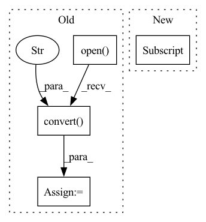

Pattern ID :29422
Before Change
print(f"Processing `{os.path.abspath(lr_image_path)}`...")
lr_image = Image.open(lr_image_path).convert("RGB")
hr_image = Image.open(hr_image_path).convert("RGB" )
// Extract RGB channel image data
lr_tensor = imgproc.image2tensor(lr_image, range_norm=False, half=True).to(config.device).unsqueeze_(0)
hr_tensor = imgproc.image2tensor(hr_image, range_norm=False, half=True).to(config.device).unsqueeze_(0)
// Only reconstruct the Y channel image data.
with torch.no_grad():
sr_tensor = model(lr_tensor).clamp_(0, 1)
// Cal PSNR
sr_y_tensor = imgproc.convert_rgb_to_y(sr_tensor)
hr_y_tensor = imgproc.convert_rgb_to_y(hr_tensor)
total_psnr += 10. * torch.log10(1. / torch.mean((sr_y_tensor - hr_y_tensor) ** 2))
sr_image = imgproc.tensor2image(sr_tensor, range_norm=False, half=True)After Change
// Load the super-resolution model weights
checkpoint = torch.load(config.model_path, map_location=lambda storage, loc: storage)
model.load_state_dict(checkpoint["state_dict"] )
print(f"Load ESRGAN model weights `{os.path.abspath(config.model_path)}` successfully.")
// Create a folder of super-resolution experiment resultsIn pattern: SUPERPATTERN
Frequency: 3
Non-data size: 4
Instances Fragment ID: 87133093
Project Name: lornatang/esrgan-pytorch
Commit Name: 087e0c9bc621989889918b52b7c0dba9485c5fd6
Time: 2022-03-06
Author: liuchangyu1111@gmail.com
File Name: validate.py
M Class Name: AnonimousClass
N Class Name: AnonimousClass
M Method Name: main(0)
N Method Name: main(0)
M Parent Class:
N Parent Class:
M File Name: validate.py
N File Name: validate.py
M Start Line: 28
M End Line: 82
N Start Line: 30
N End Line: 91
Before Change
// Compute heatmaps as preprocessing step
label_heatmaps = []
for idx, y in enumerate(tqdm(self.labels)):
x = Image.open(os.path.join(root_directory, self.image_names[idx])).convert(
"RGB" //didn"t do this for DLC
) // Rick"s images have 1 color channel; change to 3.
if transform:
x, y = transform(images = np.expand_dims(x, axis = 0), keypoints = np.expand_dims(y, axis = 0)) //check transform and normalization
x = x.squeeze(0)
y = y.squeeze(0)
x = self.torch_transform(x)
y_heatmap = draw_keypoints(y, x.shape[-2], x.shape[-1], self.output_shape, sigma = 5)
label_heatmaps.append(y_heatmap)
self.label_heatmaps = torch.from_numpy(np.asarray(label_heatmaps)).float()After Change
// Compute heatmaps as preprocessing step
//check that max of heatmaps look good
self.compute_heatmaps()
self.num_targets = self.labels[0].shape[0]
print(self.num_targets)
def compute_heatmaps(self):
label_heatmaps = [] Fragment ID: 87133095
Project Name: danbider/lightning-pose
Commit Name: 545a2f0293f923aca78924357ba161baf71f2982
Time: 2021-07-15
Author: ubuntu@ip-172-31-72-121.ec2.internal
File Name: pose_est_nets/datasets/datasets.py
M Class Name: DLCHeatmapDataset
N Class Name: DLCHeatmapDataset
M Method Name: __init__(5)
N Method Name: __init__(5)
M Parent Class: torch.utils.data.Dataset
N Parent Class: torch.utils.data.Dataset
M File Name: pose_est_nets/datasets/datasets.py
N File Name: pose_est_nets/datasets/datasets.py
M Start Line: 80
M End Line: 137
N Start Line: 80
N End Line: 114
Before Change
print(f"Processing `{os.path.abspath(lr_image_path)}`...")
lr_image = Image.open(lr_image_path).convert("RGB")
hr_image = Image.open(hr_image_path).convert("RGB" )
// Extract RGB channel image data
lr_tensor = imgproc.image2tensor(lr_image, range_norm=False, half=True).to(config.device).unsqueeze_(0)
hr_tensor = imgproc.image2tensor(hr_image, range_norm=False, half=True).to(config.device).unsqueeze_(0)
// Only reconstruct the Y channel image data.
with torch.no_grad():
sr_tensor = model(lr_tensor).clamp_(0, 1)
// Cal PSNR
sr_y_tensor = imgproc.convert_rgb_to_y(sr_tensor)
hr_y_tensor = imgproc.convert_rgb_to_y(hr_tensor)
total_psnr += 10. * torch.log10(1. / torch.mean((sr_y_tensor - hr_y_tensor) ** 2))
sr_image = imgproc.tensor2image(sr_tensor, range_norm=False, half=True)After Change
// Load the super-resolution model weights
checkpoint = torch.load(config.model_path, map_location=lambda storage, loc: storage)
model.load_state_dict(checkpoint["state_dict"] )
print(f"Load SRGAN model weights `{os.path.abspath(config.model_path)}` successfully.")
// Create a folder of super-resolution experiment results Fragment ID: 87133100
Project Name: lornatang/srgan-pytorch
Commit Name: 231bd74d21d7f532fd746f4a1cb8fb3bc008c933
Time: 2022-03-03
Author: liuchangyu1111@gmail.com
File Name: validate.py
M Class Name: AnonimousClass
N Class Name: AnonimousClass
M Method Name: main(0)
N Method Name: main(0)
M Parent Class:
N Parent Class:
M File Name: validate.py
N File Name: validate.py
M Start Line: 28
M End Line: 82
N Start Line: 33
N End Line: 91